This tool will
generate most of the "boilerplate" code needed to create a Babel/SIDL
based CCA compliant component that uses the TOPS Solver Components
(TSC).
python TOPSGenerator.py (on Apple Mac OS X you may need pythonw)
The particular set of images below generated the second TSC example: examples/c++/Ex2

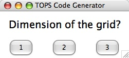

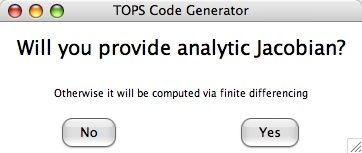
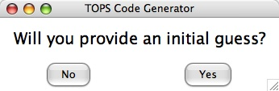
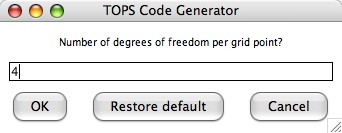
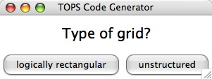
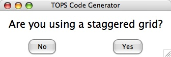
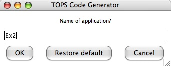
python TOPSGenerator.py (on Apple Mac OS X you may need pythonw)
The particular set of images below generated the second TSC example: examples/c++/Ex2
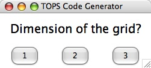
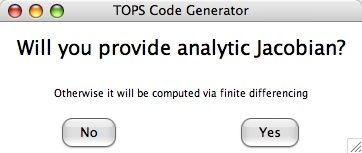
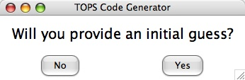
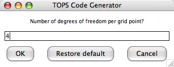
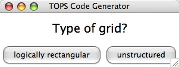
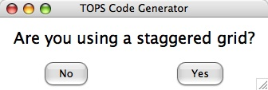
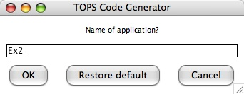